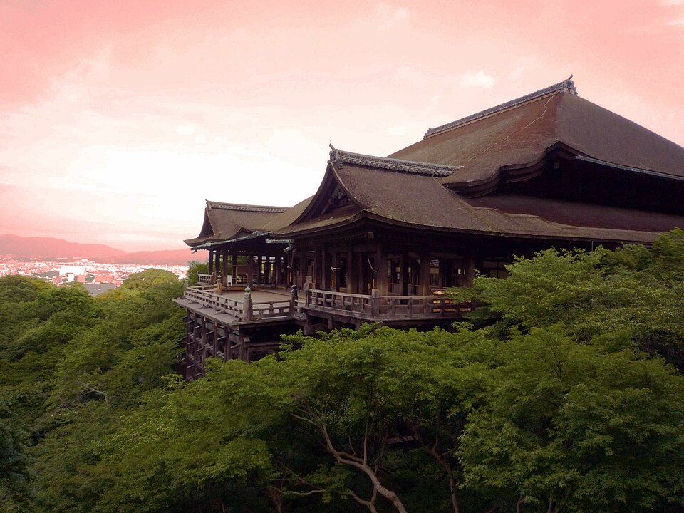
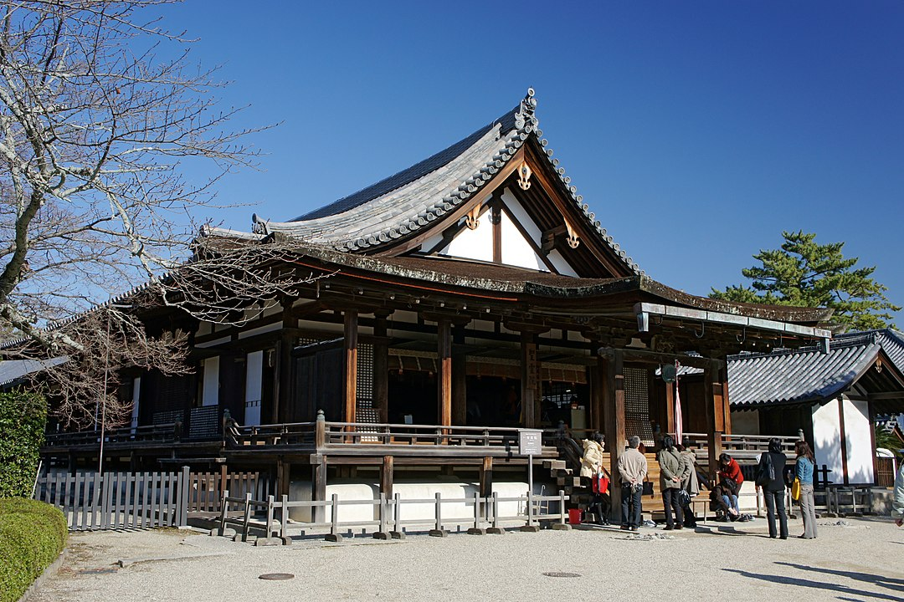
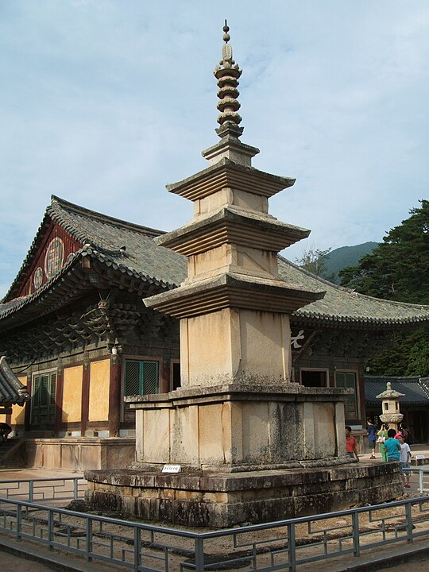
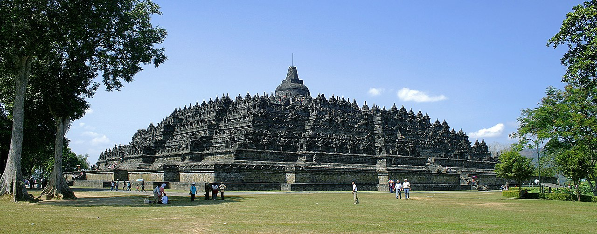
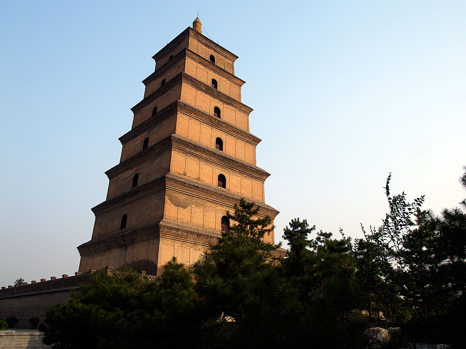
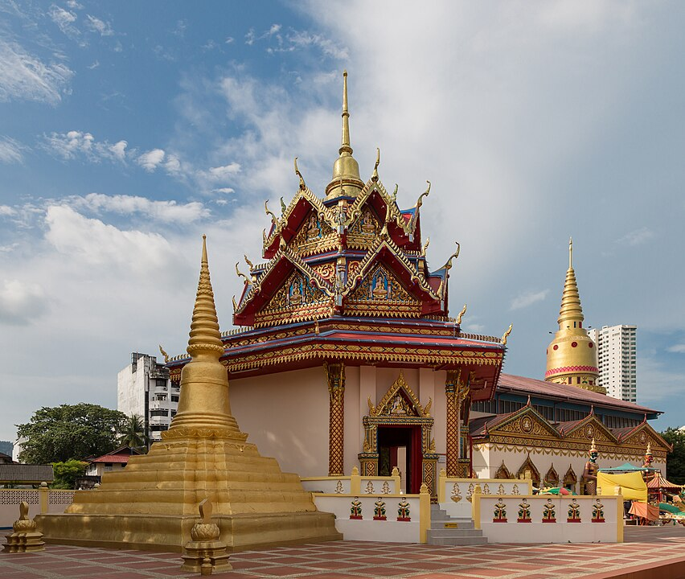
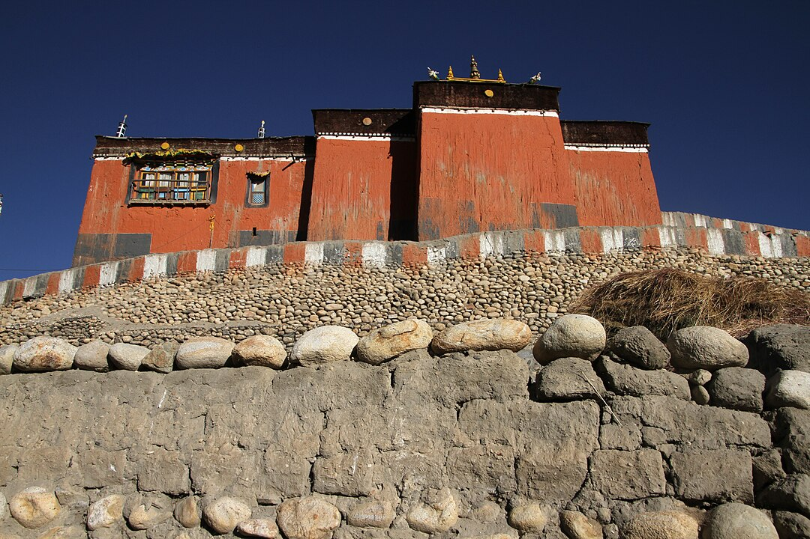
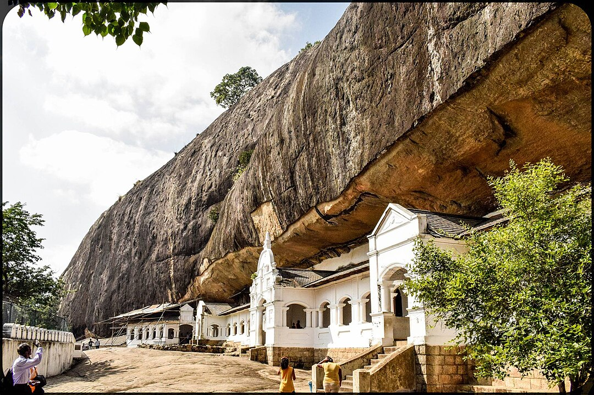

В буддизме храмом называется религиозное сооружение, предназначенное для поклонения, медитации и проведения различных религиозных обрядов. Буддистские храмы могут варьироваться по размеру, архитектуре и функциям в зависимости от региона и школы буддизма.

Храм Киёмидзу-дэра
Функции буддистского храма
Буддистские храмы выполняют множество функций, которые включают в себя религиозные, культурные и социальные аспекты:
Место поклонения: Храмы служат местом, где буддисты могут прийти для медитации, молитвы и участия в религиозных церемониях.
Образование: Многие храмы предлагают образовательные программы, включая уроки по буддистской философии, медитации и этике.
Социальная поддержка: Храмы часто служат центрами социальной поддержки, предоставляя помощь нуждающимся, включая еду, жилье и медицинскую помощь.
Культурные мероприятия: В храмах проводятся различные мероприятия, такие как фестивали, концерты и выставки, которые помогают сохранять и распространять буддистскую культуру.
Монашеская жизнь: Храмы являются домом для монахов и монахинь, предоставляя им место для жизни и духовной практики.
Общинные центры: Храмы служат местом встречи для буддистской общины, где люди могут общаться, обмениваться опытом и поддерживать друг друга.

Храм Хорю-дзи
Элементы буддистского храма
Рассмотрим основные составляющие элементы буддистского храма, которые формируют его структуру и помогают верующим на пути к духовному совершенствованию.
Часть храма
Описание
Ступа (Чайтья)
Полусферическая структура, содержащая реликвии или священные предметы.
Вихара
Монастырь или жилое помещение для монахов.
Будда-холл (Будда-греха)
Главный зал для молитв и медитаций с изображением Будды.
Пагода
Многоярусная башня, часто служащая хранилищем реликвий.
Мандала
Символическая диаграмма, используемая для медитации и ритуалов.
Торана
Ритуальные ворота, украшенные резьбой и символами.
Гонг
Инструмент, используемый для созыва монахов и начала ритуалов.
Колокольня (Дхарма-чакра)
Башня с колоколом, который звонит для обозначения времени молитвы.
Бодхи-дерево
Дерево, символизирующее просветление Будды, часто высаженное на территории храма.
Алтарь
Место для подношений и поклонения, обычно с изображениями Будды и других святых.
Лампы и свечи
Символы просветления и мудрости, размещенные на алтаре.
Молитвенные колеса
Цилиндры с мантрами, которые верующие вращают для накопления благой кармы.
Медитационные залы
Специально отведенные помещения для практики медитации.

Соккатхап (Пагода Сакьямуни)
Формы буддистского храма
Буддистские храмы могут принимать разнообразные формы и архитектурные стили, которые зависят от культурных, исторических и региональных особенностей. Вот некоторые из наиболее распространенных форм буддийских храмов:
Ступы – куполообразные сооружения, символизирующие просветление Будды. Они часто содержат реликвии, священные тексты или другие значимые предметы.

Ступа Боробудур
Пагоды – многоярусные башни, каждая из которых символизирует различные аспекты буддистского учения и природы. Они могут быть деревянными, каменными или кирпичными.

Большая пагода диких гусей
Ват – комплекс зданий, включающих главный храм, молитвенные залы, жилые помещения для монахов, учебные заведения и другие постройки. Ваты часто украшены богатыми орнаментами и статуями Будды.

Храм Чайамангкаларам
Гомпы – монастырские комплексы, предназначенные для проживания монахов и проведения религиозных обрядов. Они могут включать молитвенные залы, учебные помещения и жилые здания.

Гомпа Тубтен Шедруп Дхаргьелинг
Пещерные храмы, вырезанные в скалах или пещерах и часто украшенные фресками, статуями и резьбой. Они создают уникальную атмосферу уединения и духовности.

Золотой храм Дамбулла
Архитектура буддистских храмов прошла через значительные изменения с момента зарождения буддизма, отражая культурные, исторические и географические влияния:
История буддистской архитектуры
Древняя Индия (VI век до н.э. — III век н.э.)
Ранние ступы: В древней Индии, начиная с VI века до н.э., первые буддистские сооружения были ступами. Эти куполообразные структуры служили местами поклонения и медитации, храня реликвии Будды.
Империя Маурьев (III век до н.э.)
Ашока и распространение буддизма: В период правления императора Ашоки, буддизм активно распространялся по всей Индии и за её пределами. Ашока способствовал строительству ступ и монастырей, делая буддистскую архитектуру более доступной для народа.
Кушанская империя (I–III века н.э.)
Гандхарская архитектура: В эпоху Кушанской империи буддистская архитектура в регионе Гандхара (современный Пакистан и Афганистан) подверглась сильному влиянию греко-римских традиций. Именно здесь появились первые изображения Будды в человеческом облике.
Гуптская империя (IV–VI века н.э.)
Золотой век буддистской архитектуры: Период Гуптской империи считается золотым веком буддистской архитектуры. В это время были построены многие великолепные храмы и монастыри, архитектура которых стала более сложной и декоративной.
Распространение в Юго-Восточную Азию (VII–XIII века)
Кхмерская и тайская архитектура: Буддизм распространился в Юго-Восточную Азию, где местные культуры адаптировали его архитектурные формы. В Камбодже возникли величественные храмы, такие как Ангкор-Ват, отражающие синтез буддистских и местных традиций.
Китай и Корея (I–X век н.э.)
Пагоды и монастыри: В Китае и Корее буддизм способствовал строительству многоярусных пагод и крупных монастырских комплексов. Эти сооружения сочетали в себе местные архитектурные традиции и буддистские элементы, создавая уникальные культурные памятники.
Япония (VI–XIV века)
Дзен-буддизм и храмовые комплексы: В Японии буддизм привел к развитию уникальных архитектурных стилей. Дзен-храмы, с их простотой и минимализмом, стали важной частью японской буддистской архитектуры.
Тибет (VII век н.э. — настоящее время)
Тибетские монастыри (гомпа): В Тибете буддизм способствовал строительству крупных монастырских комплексов, часто расположенных в горах. Эти монастыри включают множество зданий, украшенных яркими фресками и статуями, создавая уникальную атмосферу духовности.
Современность (XX–XXI века)
Современные буддистские храмы: В современный период буддистские храмы продолжают строиться по всему миру, включая Запад. Современная архитектура сочетает традиционные элементы с новейшими строительными технологиями, создавая новые формы буддистских сооружений.